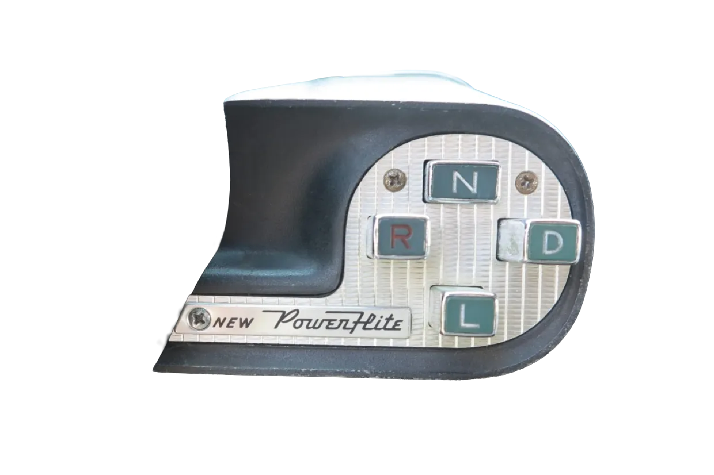
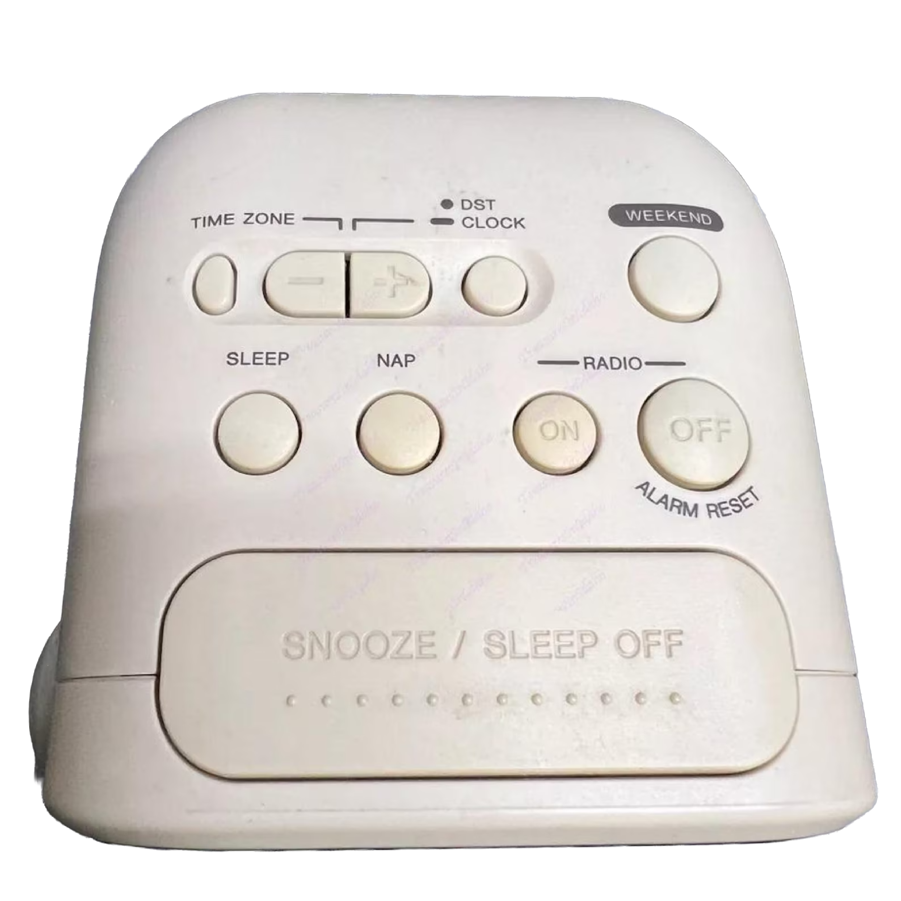
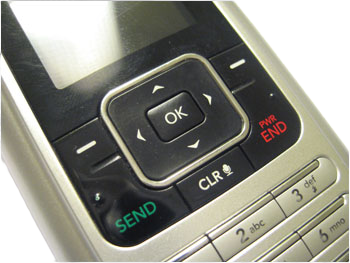
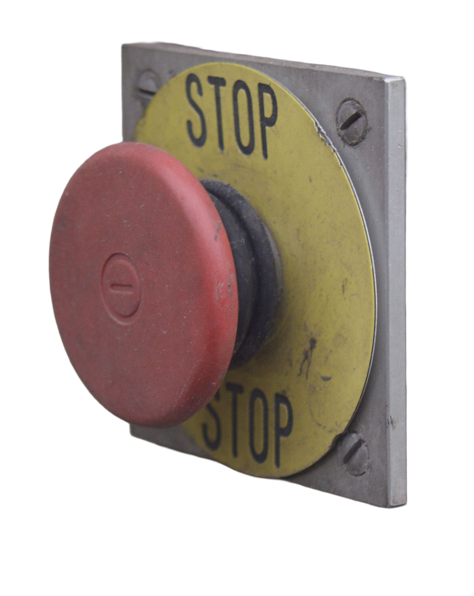
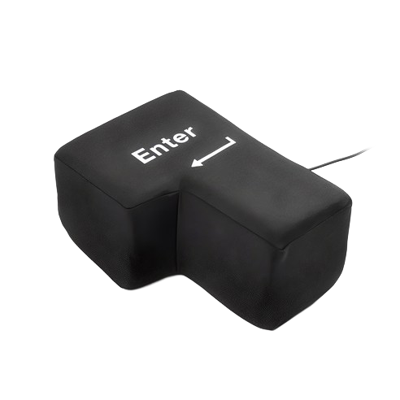
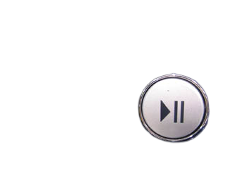
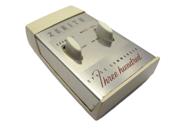
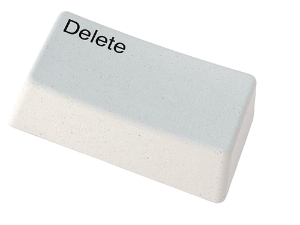
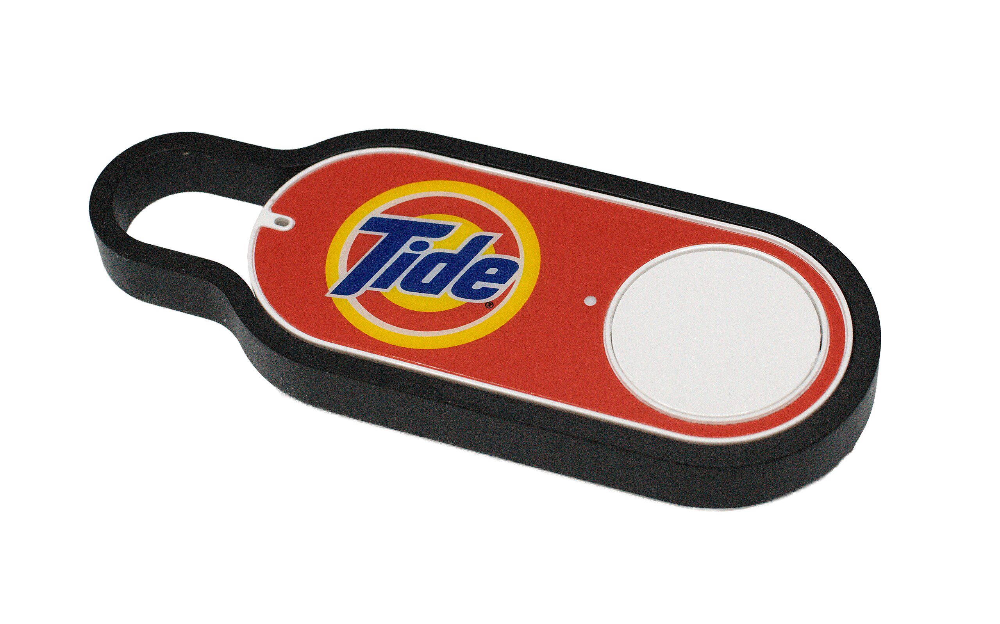
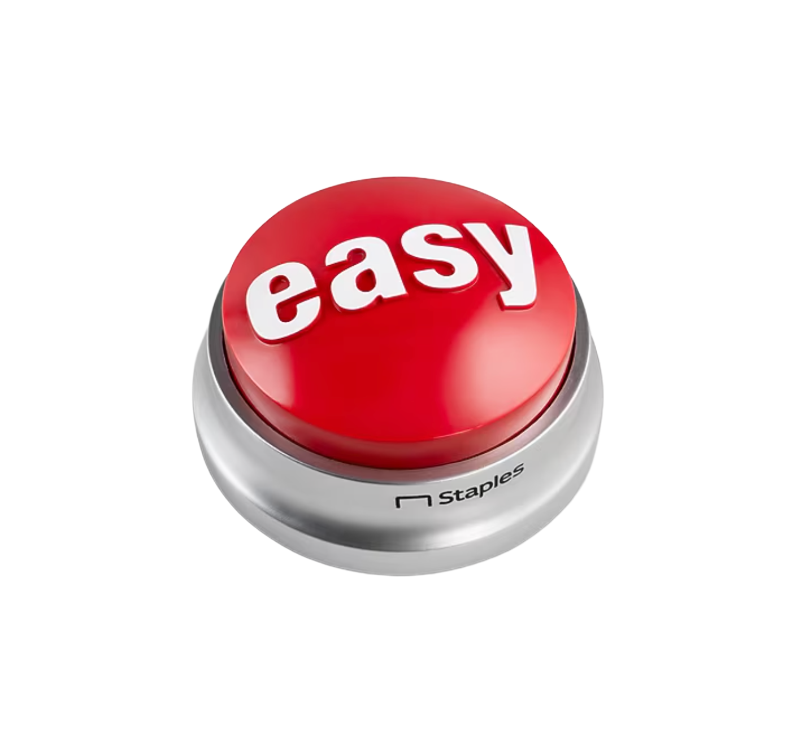
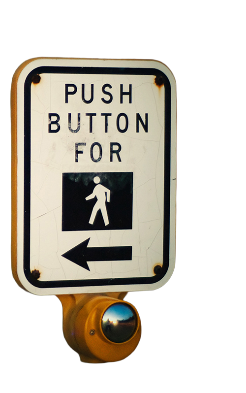
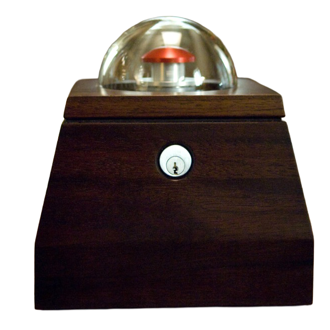
First on Plymouth in the low-price 3! The how of it - Select your driving range with just a finger-tip touch on a button. Then PowerFlite fully automatic transmission takes over. The why of it - To give you new care and safety of control! As easy as touching a light switch . . . and safely positioned at the left of the steering wheel, where children can’t reach it while you’re driving. It’s a partner of PowerFlite - the transmission so smooth it responds to a finger-tip touch. The joy of it - It’s the ultimate in driving ease. Restore the thrill you knew with your first car.
The Snooze button was first marketed in 1956 by General Electric-Telechron. The Snooz-Alarm. (Hey, it’s the 50th anniversary of the Snooze button! Where’s the parade?) Telechron made a wide variety of clocks from about 1917 until 1959, merging and unmerging with General Electric along the way. In 1959, Westclox marketed the Drowse.
It’s the one button that requires nearly no translation. Luckily, it’s also one of the most compact words available. OK. Two letters that will fit on any button. OK is not just a word anymore. It’s an icon. A word-icon. OK typically lives in the center of four arrows, navigational controls for maneuvering around menus or other onscreen options. It sits in the center, offering comfort. It grounds you when you’re lost. It affirms when you’re done. Don’t worry, it’s OK.